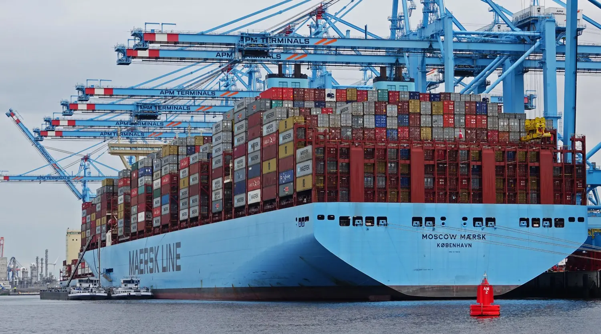

Choose the network
Select the starting air-and-sea freight mix. This determines your initial cost, transit time, carbon exposure, and schedule buffer.
Global Operations Control Tower

You are a Supply Chain Manager at SCS, a leading global logistics company operating an end-to-end control tower for a major consumer-goods client.
A critical consumer-goods shipment is staged at the SCS Shanghai consolidation warehouse. Los Angeles needs 2,500 units for a retail event by Day 28. Rotterdam needs 1,800 units by Day 30. You have one network, a $150,000 budget, and ten disruptions ahead.